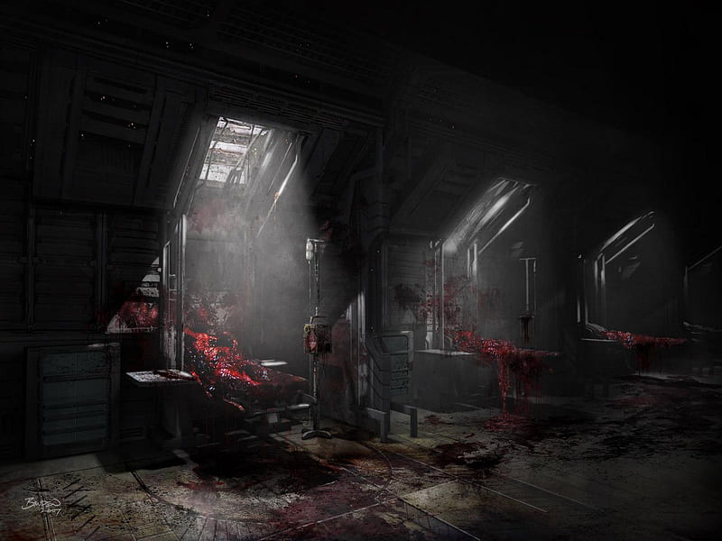
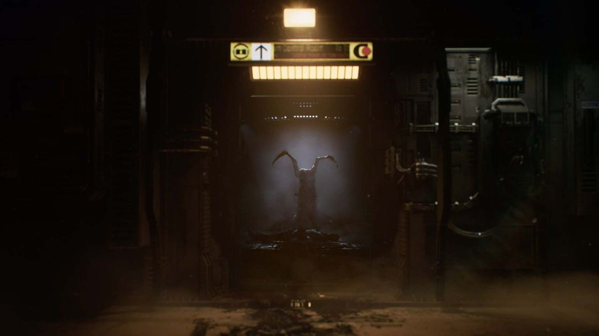

Circumstances Explanation
We arrived the destination planet LV.436 at UST(Universe State Time) 04:00.
First, our expedition landed on the planet and conducted several surveys on the planet for two days, and judging that the environment was the same as that of the Earth, everyone took off their spacesuits and began to pioneer the colonial village.
At first things went smoothly, but The symptoms began to appear in the pioneering population:
- High fever
- Hallucination
- Falling of artificial joints and organs from the body
- Excessive violence and impulse to kill
- Abnormal variation in the body
We determined that the symptoms were related to a specific virus on this planet's environment, so we first quarantined those with symptoms in Area A on the spaceship.

Cam UST 15:02 | Area A > Treatment facility

Cam UST 15:16 | Area A > Aisle [Top]
The next day after the quarantine, a devastating number of people in Area A died from infected people.
When checked on camera, the infected seemed to absorb the victims and merge. Or they divided each others.
UST 21:00, We decide that the planet is dangerous and we decide to return, and then we leave the spaceship from it.
UST 23:42, The infected people broke the shutter of Area A. Some survivors noticed this and raised an emergency alert in Area B, but many survivors were killed during the evacuation. All survivors were evacuated to Area C.